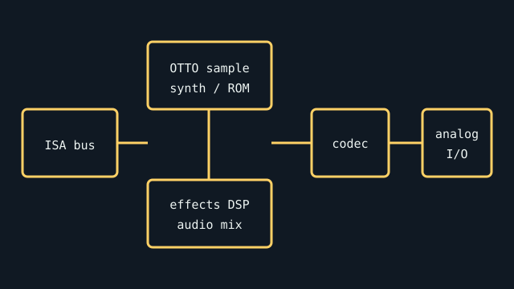

[ INDIVIDUAL COMPONENT // SOUND HARDWARE ]
Ensoniq Soundscape Elite
A premium ISA Soundscape revision built around sample-based synthesis and a dedicated effects path. Its board-level I/O and software environment distinguish it from the original Soundscape.

Specifications
| Product ID | Ensoniq Soundscape Elite (Elite ISA board; verify silkscreen and label; not the base Soundscape or VIVO). |
|---|---|
| Bus | 16-bit ISA; non-Plug-and-Play resource setup is typical of the period. |
| Connectors / I/O | Analog line-level output and input, microphone input, joystick/MIDI, plus revision-dependent internal CD-ROM/audio connections; check actual rear bracket and headers. |
| Chipset / conversion | Ensoniq OTTO sample-based synthesis engine with onboard sample ROM and a separate effects processor; 16-bit stereo audio path. The codec/ROM and external connectors should be identified from the board markings. |
| Drivers / OS | Ensoniq setup software and drivers targeted DOS and Windows 3.x/9x-era systems. No current OS support is claimed; exact driver needs vary by Soundscape model and game. |
| Variant compatibility | Do not substitute the Elite driver/configuration for other Soundscape boards without checking the model-specific manual. ISA resource conflicts and DOS memory managers can affect setup. |
Service & preservation
Photograph the revision, memory/ROM markings, jumpers, and CD interface headers. Preserve the original setup disks and record the selected I/O, IRQ, and DMA values. Inspect the analog section and aging capacitors before prolonged operation; keep undocumented internal CD connectors disconnected until their pinout is verified.
Primary sources
- Internet Archive catalog — original Ensoniq Soundscape documentationSearchable archival scans of manufacturer-authored manuals and software documentation; check the exact Elite model.
- ALSA Project — Ensoniq device/driver matrixPrimary project documentation for PCI device IDs and Linux driver support; it does not replace the model-specific Ensoniq manual.